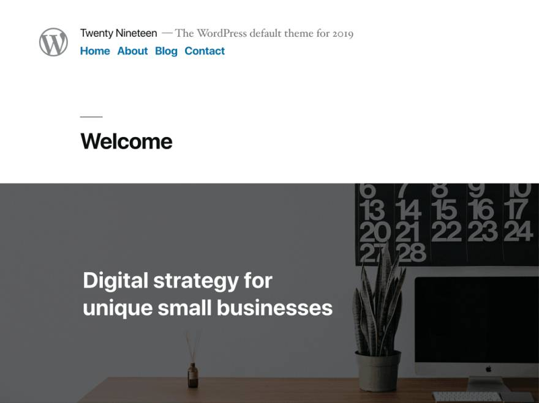

Información sobre Twenty Nineteen: Preview - Manual de WordPress - Directorio de temas - Changelog.

Información sobre Twenty Seventeen: Preview - Manual de WordPress - Directorio de temas - Changelog.
Información sobre Twenty Sixteen: Preview - Manual de WordPress - Directorio de temas - Changelog.

Información sobre Twenty Fifteen: Preview - Manual de WordPress - Directorio de temas - Changelog.
Información sobre Twenty Fourteen: Preview - Manual de WordPress - Directorio de temas - Changelog.
Información sobre Twenty Thirteen: Preview - Manual de WordPress - Directorio de temas - Changelog.

Información sobre Twenty Twelve: Preview - Manual de WordPress - Directorio de temas - Changelog.

Información sobre Twenty Eleven: Preview - Manual de WordPress - Directorio de temas - Changelog.

Información sobre Twenty Ten: Preview - Manual de WordPress - Directorio de temas - Changelog.

Información sobre Default en el Directorio de temas.
Información sobre Classic en el Directorio de temas.